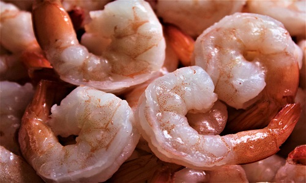

Cesar Molina
Henry
tarea de HTML / CSS
El ramen (ラーメン?) (pronunciado aproximadamente r`a:mEn,
o ['ɽaːmɛɴ]) es un plato japonés. Si bien cada región de Japón
tiene su propia receta de ramen, la preparación básica consiste
en distintos tipos de fideos japoneses servidos en un caldo preparado
comúnmente a base de carne, miso y salsa de soja así como diferentes
guarniciones como rebanadas de carne de cerdo (char siu - チャーシュ),
algas (nori - 海苔), menma (メンマ) y cebolleta (negi - 葱).
Ramen Bar Fuku Bogota
Ramen de Camarones

Ramen Cerdo Aumado